Bathroom Ceiling Drip Relocator
The Design Process
Project Inspiration
Choosing to live off campus for my 2nd year of college has been a fantastic choice. I have a guaranteed single for the rest of my undergrad, I get to choose my roommates, I'm very close to the engineering side of campus, and I don't need to pack up all my belongings in the summer.
The only downside? Our superintendent is terrible. If anything ever breaks, we are completely on our own and need to get resourceful. Radiator steaming up the whole house? Set up a tactical fan to vent it out the window. The window won’t stay open? Jam it with a Cheez-It box.
Living in a house full of engineers has turned every maintenance failure into a mental challenge. So when a perfectly placed drip of water started falling from our bathroom light, timed and positioned so perfectly that it always hits you the moment you use the sink, I knew it was a problem that demanded a solution.
The Plan
Now, I'm not a plumber or an electrician, and yes, we could call one to fix this problem, but where's the fun in that? Instead, let's overengineer a solution.
My initial plan was to create a bowl-shaped mount that would sit under the light fixture’s rim, catch the drip, and redirect it via a small ramp to a harmless stop at the back left corner of the sink (see SolidWorks part/assembly below).
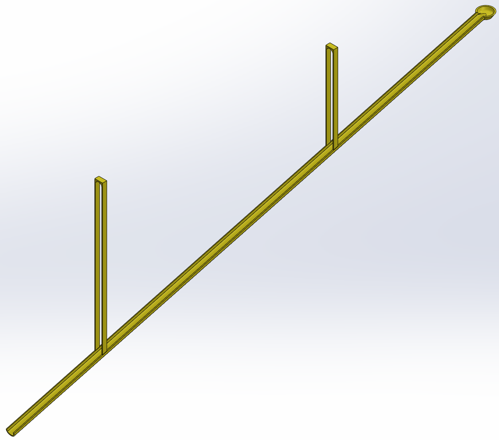
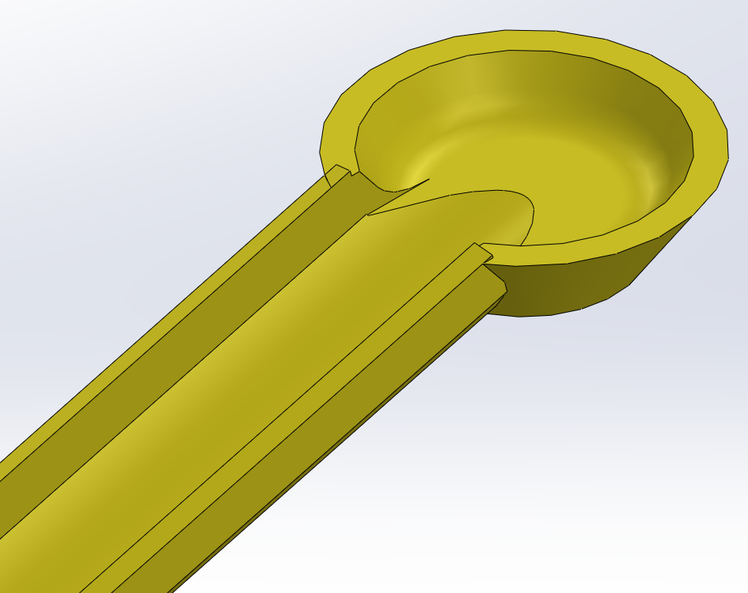
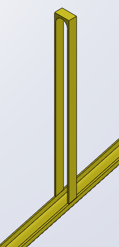
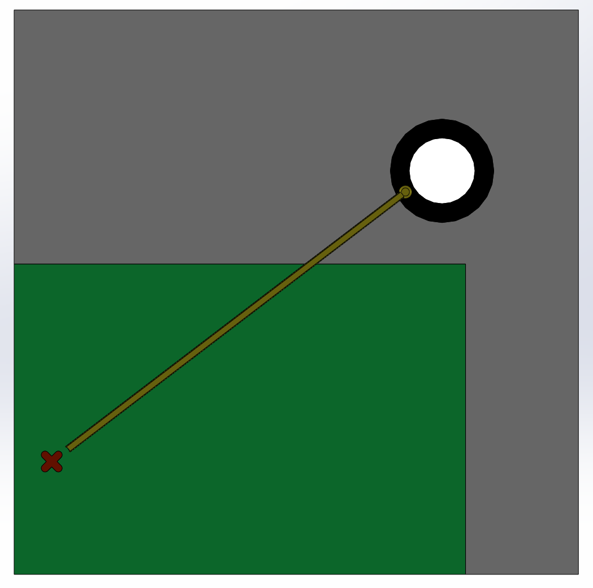
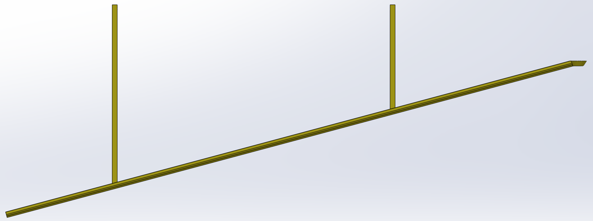
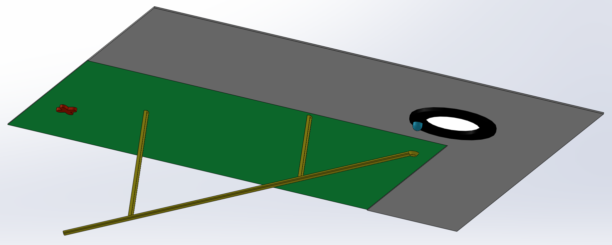
Drip Relocator Part
Drip Relocator w/ Bathroom Assembly
Gray represents the ceiling, the white circle is the light fixture, the black ring is its rim, the blue dot marks the location of the water drip, green shows the sink’s vertical projection onto the ceiling, and the red X indicates the ideal relocated drip position.
Unfortunately, there were some issues with this original design that caught my eye before I even created it. For one, I neglected to consider that the drip could move to a slightly different location on the rim, rendering our part completely ineffective and missing the drip entirely. At one point, I even considered expanding the bowl to cover the entire light, only to quickly realize it would completely block the bathroom's light. We needed a solution that could focus the drip into one spot but also not block the light while doing so.
So I turned to fluid mechanics. Thanks to surface tension and the pressure gradient formed where water meets a material, a droplet tends to cling to nearby surfaces. I designed two separate ramps to take advantage of this behavior alongside gravity, funneling any water appearing on the far side of the light rim directly toward my relocator’s collection point. Since I had already measured the light rim and recreated it in SolidWorks, I was able to design each ramp with a cutout that allowed the ramps to mount cleanly without blocking any light.
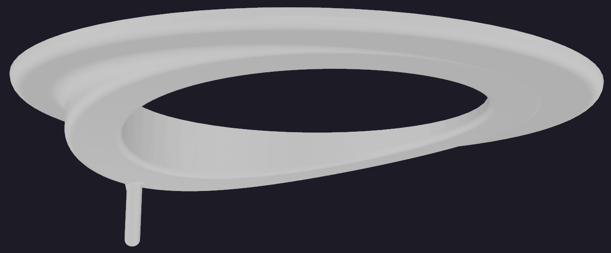
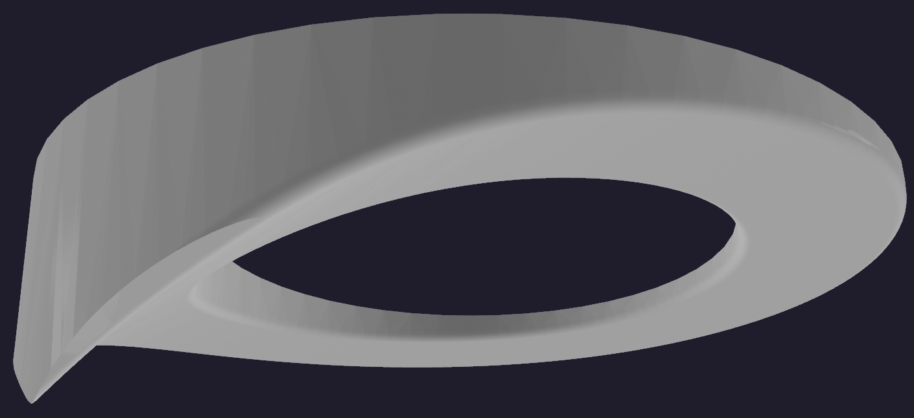
Ramp v1
Ramp v2
After creating the first design, I realized water collecting along the far or outer edges of the light rim might not be captured. To tackle this problem, I also designed a second ramp with a steeper angle and wraparound geometry to guide water from all sides toward the collection point.
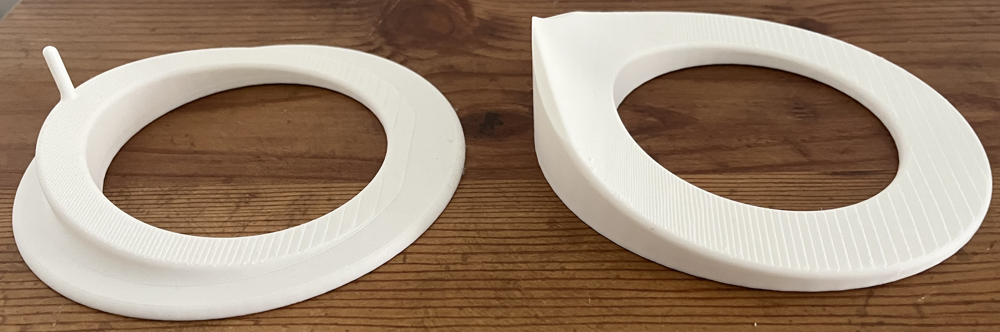
Printed Parts in PLA
Surface Tension Testing Ramp v1
Surface Tension Testing Ramp v2
As you can see, neither part reliably redirects the water stream from our sink. The second version performs slightly better than I expected (you can see the stream traveling slightly farther up the ramp), but it still falls short of the collection point, making it ineffective for our purpose. After some research, I realized that the problem might not be just in the geometry, but also in the material choice. PLA (Polylactic Acid) is very rigid and hydrophobic, which limits how well a theoretical drop will interact with it. A better choice would be TPU (Thermoplastic Polyurethane), which is much softer and flexible, and has better adhesion to water. It is 3D printable on my printer, but would require purchasing new filament and doing printer maintenance, which seems like an unnecessary complication when a geometric solution may achieve the same result.
To simplify things, I created a revolved bowl-shaped surface with a cutout in the middle for the light, sloped down toward a single low point. I added a hole there, tolerance-matched for ¼” Schedule 40 PVC. I originally planned to use real PVC, but the hardware store didn’t have the right size, so I printed the tube instead. It ended up being cheaper and gave me tighter control of the tolerance. Since my printer can only print 256 mm (~10 in) in each dimension, I split the part up into three sections and created a V-shaped revolve, which allowed me to tolerance-match the two pieces as shown below, as they sandwich together. One thing I learned from a senior engineer at MagiQ is that time is an engineer’s most valuable resource. If you can make something faster or at a lower cost than searching for an alternative, without sacrificing performance, you should.
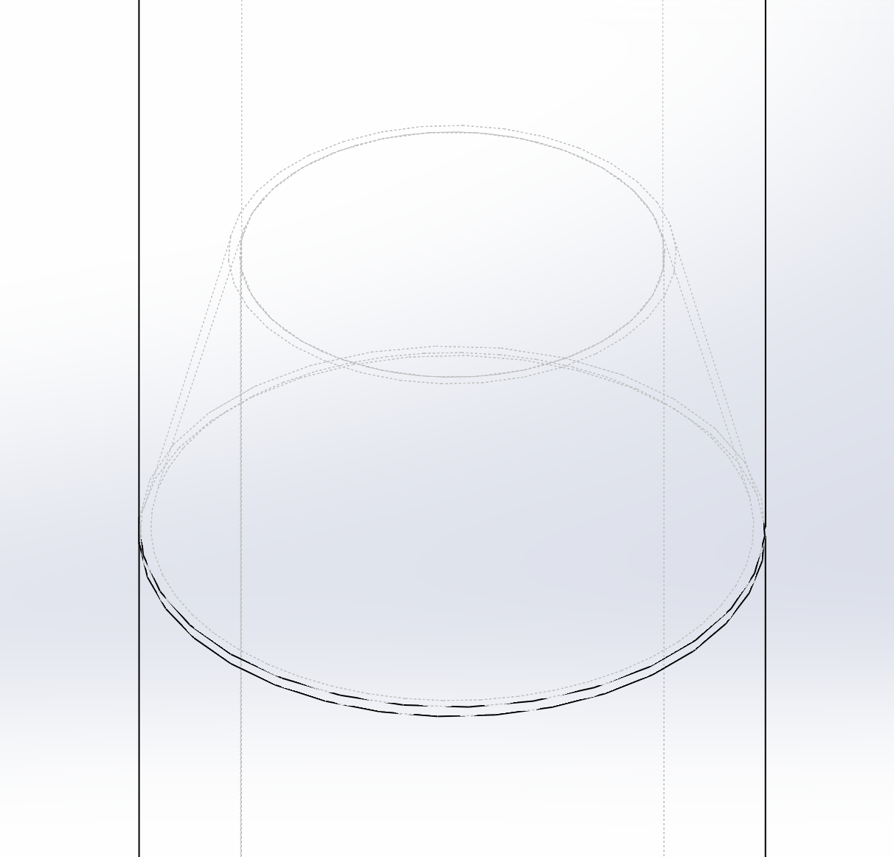
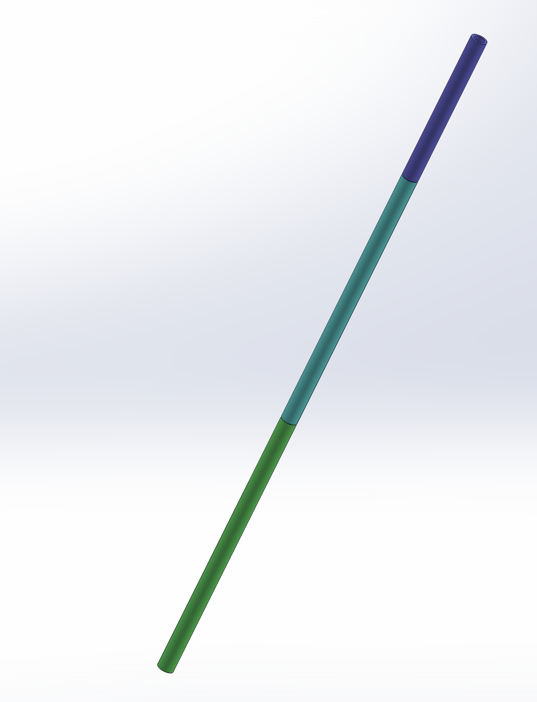
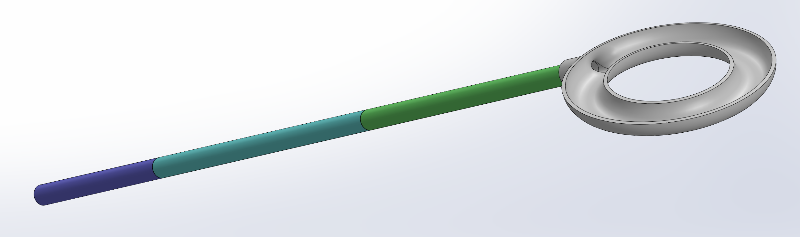
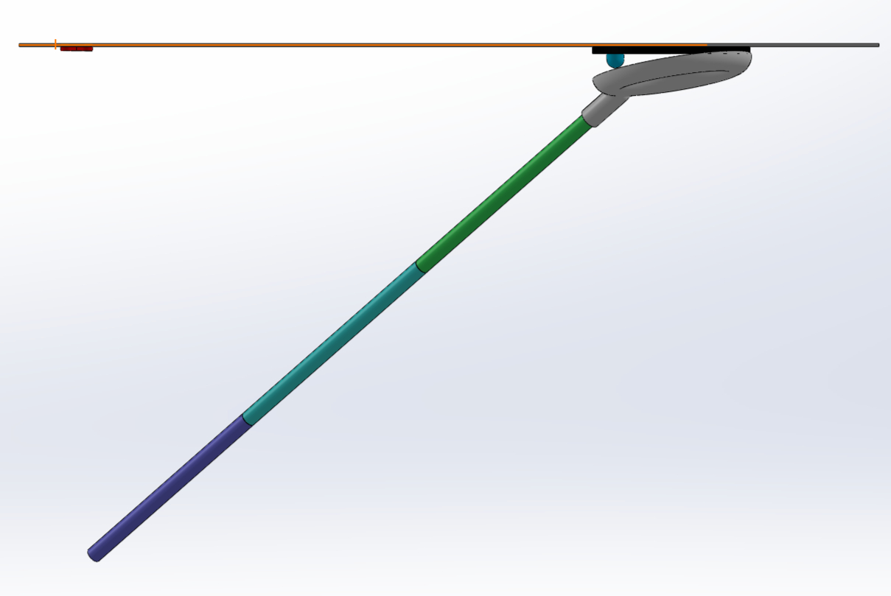
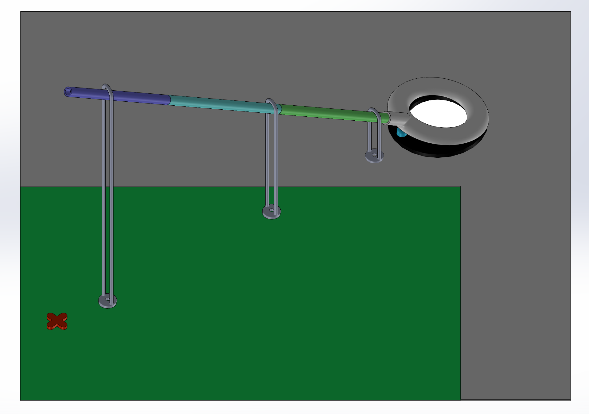
Full Assembly v2 – designed some supports as well
The Final Product
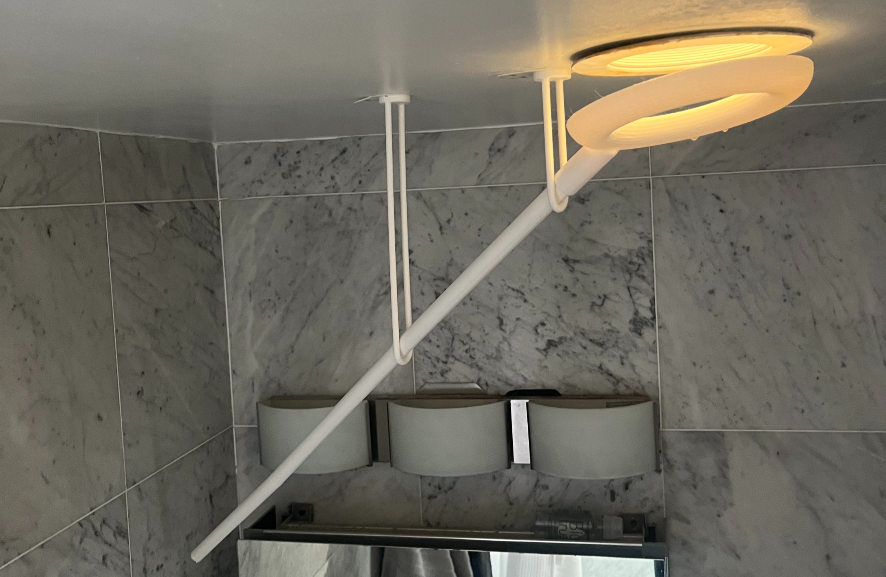
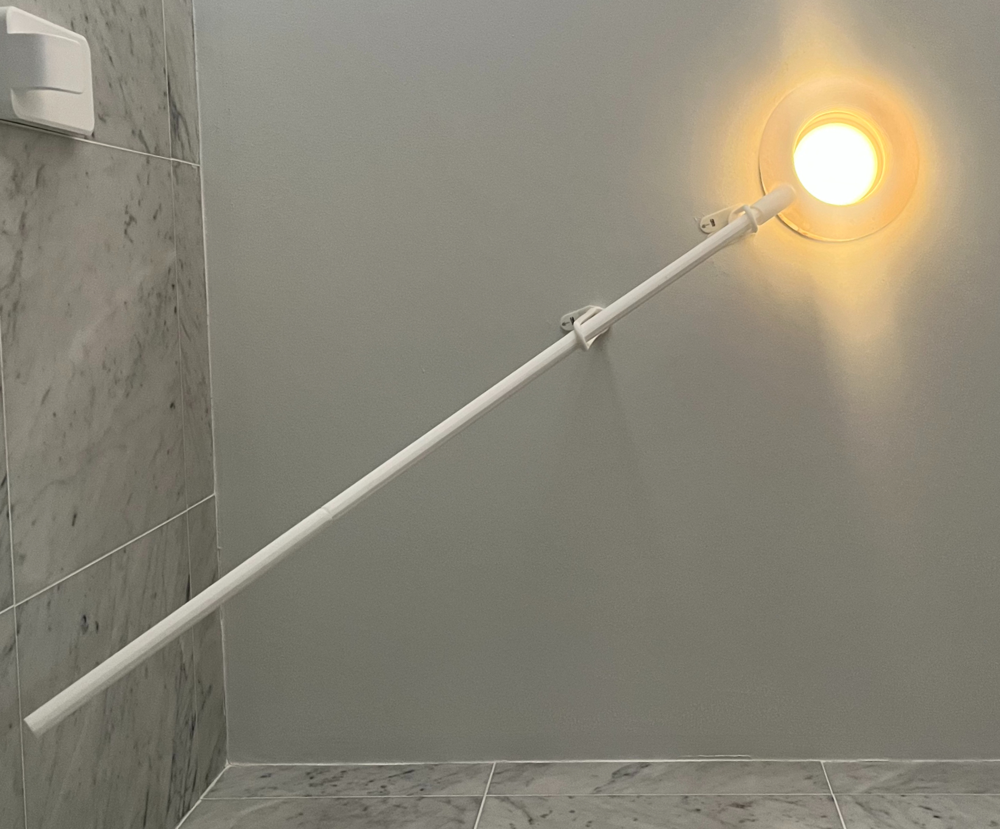
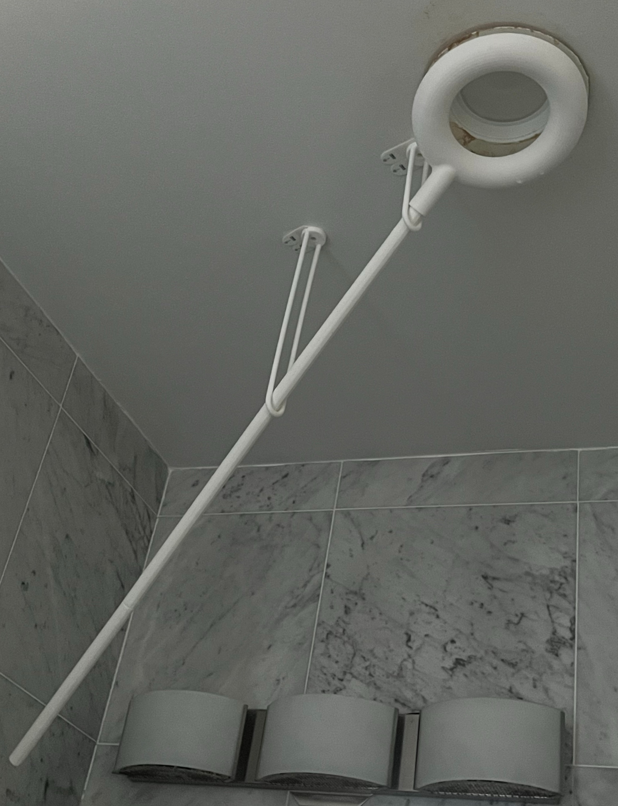
My Takeaway
This project started as a small annoyance in our bathroom and turned into a really solid engineering exercise. I had to think about fluid behavior, surface tension, and material choice, and I went through a couple of failed designs before landing on something that actually worked. It also forced me to balance perfection with practicality by printing the PVC instead of hunting for the exact part, splitting the whole assembly into sections to fit my printer, and designing something that could be installed and removed without inhibiting the light.
More than anything, it reminded me that small, everyday problems are a great testbed for real engineering thinking: define the constraints, prototype fast, learn from what fails, and iterate until it works in the real world rather than just in CAD.